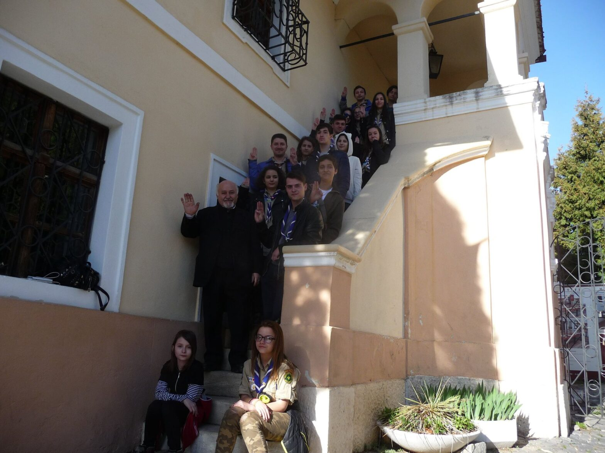

Poveștile primăverii: ieșirea la Brașov

La începutul lunii aprilie, cu mic, cu mare, am plecat la Braşov, unde am pus la cale un program comun cu cercetaşii de acolo şi am vizitat câteva locuri interesante. Ca să vă faceţi o imagine despre ce a ieşit, Ada a pregătit un scurt articol despre cele petrecute sub Tâmpa:
Încă un weekend în afara Bucureștiului – o mică evadare. În perioada 1-3 aprilie ne-am hotărât să mergem la Brașov pentru a face o fapta bună și a acumula experiență.
Am pregătit un program pentru cercetașii de la Centrul Local “Orizont” Brașov. Pentru câteva ore, noi am fost pentru ei liderii și ajutoarele de lider.
Lupişori și temerarii au fost extrem de comunicativi și implicaţi, iar noi am căpătat puțină experiență şi ne-am distrat pe măsură. Pentru mulți dintre noi, aceasta a fost prima oară când am pregătit un program și când am făcut activități cu alți cercetași. Ne-am bucurat să lucrăm cu ei, iar ei au fost foarte încântați de această mică schimbare.
După ce am terminat programul, am avut ocazia de vizita Şcheii Braşovului, unde am întâlni un om minunat, Vasile Oltean , care ne-a prezentat Prima Școala Românească, unde am învățat și am aflat multe lucruri noi din istorie.
Câteva impresii ale cercetaşilor noştri:
Ana: La prima vedere, pare ca programul pentru fiecare ramură este un joc , dar doar până când afli câte puncte trebuie atinse pentru ca din acele 2 ore de program cercetașul să învețe ceva!… Până voi ajunge în momentul de a fi lider, sunt dispusă să o repet o asemenea experiență de unde să învăț!
Cristiana: În programul de la Brașov exploratorii au demonstrat că pot fi lideri pentru temerari și lupișori. După părerea mea de temerar, luând parte la programul lor, s-au descurcat foarte bine. M-au făcut să mă distrez si să învăț lucruri noi în același timp. M-am simțit foarte bine și cred că nu am fost singura!
Ada Ionescu